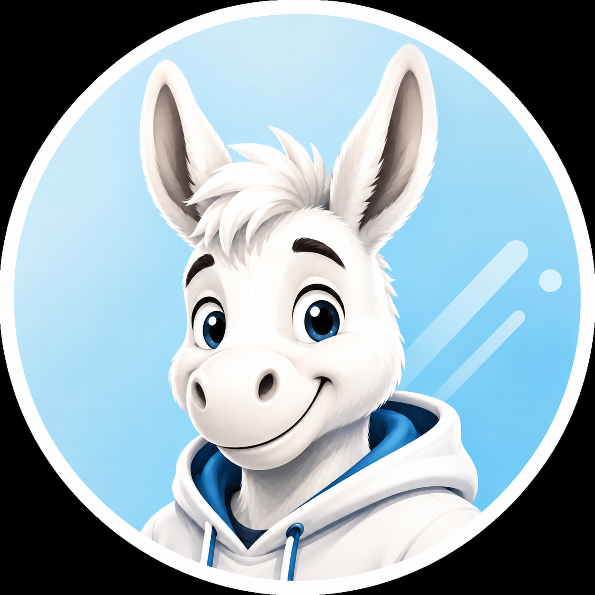

מהי תודעת העד?
תודעת העד היא היכולת לשים לב למחשבות, לרגשות, לתחושות הגוף ולדחפים — בלי להיבלע בהם מיד. היא אינה ניתוק מהחיים, אלא דרך לראות את החיים בצורה רחבה יותר לפני שמגיבים.
משהו תפס אותך? כעס, לחץ, עלבון, פחד או מחשבה שלא עוזבת?
בוא נעשה משחק קצר של דקה — לא כדי לפתור את כל החיים, אלא כדי לראות רגע מה קורה בתוכך.
לא צריך להיות רוחני. לא צריך להבין פילוסופיה. רק לענות בכנות.

יכול להיות שזה חשוב. אבל בוא נראה את זה לפני שאתה נבלע בזה.
תודעת העד היא היכולת לשים לב למחשבות, לרגשות, לתחושות הגוף ולדחפים — בלי להיבלע בהם מיד. היא אינה ניתוק מהחיים, אלא דרך לראות את החיים בצורה רחבה יותר לפני שמגיבים.
המשחק נוצר כחלק מפרויקט GEN1 של נדב טלר, שמחבר בין אדם, גוף, נשימה, עדות, חברה, מדינה ועתיד. המטרה היא להעביר את חוויית העדות בצורה פשוטה, מצחיקה ונגישה — בלי הרצאה ארוכה ובלי מילים מסובכות.
בהרצאות של נדב טלר, תודעת העד היא נקודת כניסה להבנה רחבה יותר של האדם, החברה והמדינה. לפני שמתקנים מערכות גדולות, צריך להבין איך אדם מגיב, נלחץ, מזדהה, נעלב, כועס — ואיך הוא יכול לעצור רגע ולראות.
ספר יסוד עוסק בגוף, נשימה ותודעת העד. תורת המדינה הדואלית מרחיבה את אותו עיקרון אל החברה והמדינה: לא להיבלע במטוטלת, לא להגיב רק מתוך פחד או מחנה, אלא לבנות מודל רחב, יציב וחכם יותר. GEN1 מחבר את הדרך האישית והדרך החברתית למסלול אחד.
אפשר להמשיך מכאן לספרים, להרצאות, לתורת המדינה הדואלית או למסלול הפעולה של מרכבה ישראלית.